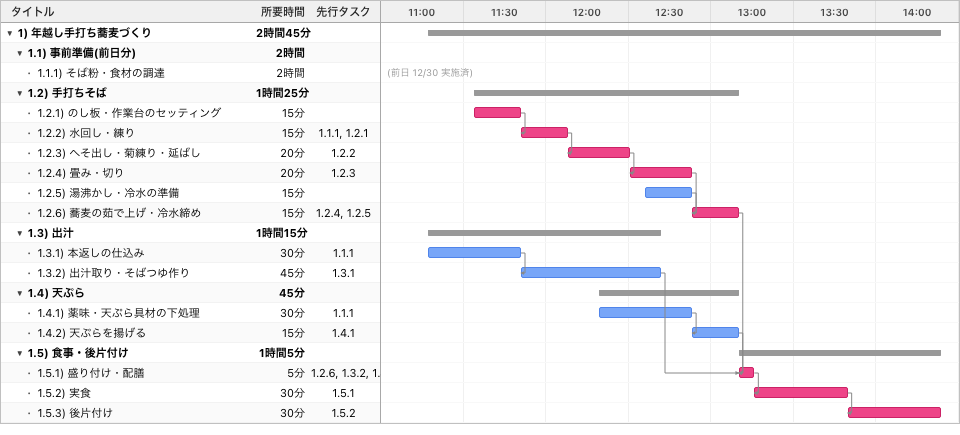
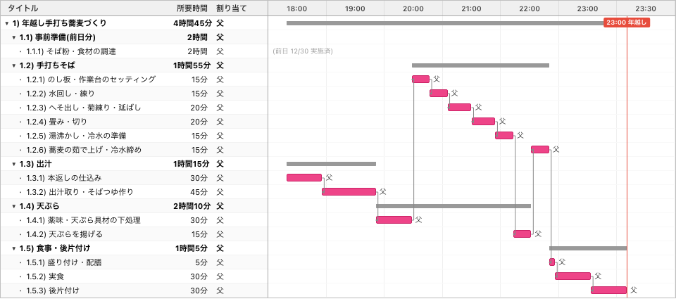
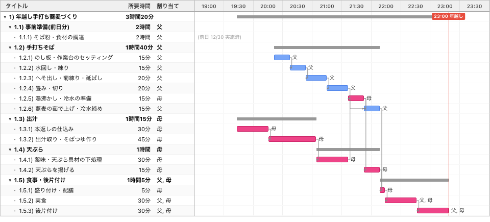
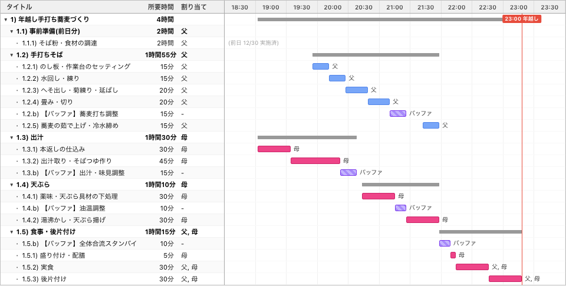
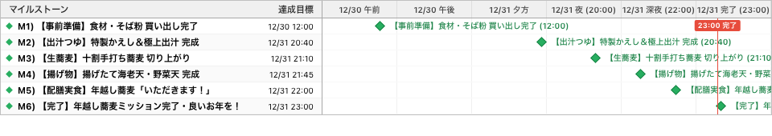

年越し手打ち蕎麦を作るWBSを作ってみた
今回は「WBSで覗いてみた」シリーズとして、「年越し手打ち蕎麦を作るWBS」を作成しました。
プロジェクトマネジメントの現場では、「リソースの平準化」「クリティカルパス」「逆算思考（バックワード・スケジューリング）」「バッファ管理」「ステークホルダーコミュニケーション」といった様々な概念が登場します。しかし、理論だけではなかなか直感的に理解しにくいものです。
そこで今回は、誰にとっても身近で、かつ絶対に失敗が許されない**「大晦日の23:00（除夜の鐘の前）に家族全員で食べ終えて片付けまで完了する」**という年越し蕎麦プロジェクトを題材に、WBSを通じてプロジェクトマネジメントの真髄を検証していきます。
※そもそも「WBSとは何か？」について詳しく知りたい方は、こちらの記事「WBSの勘所」や「ガントチャートの決め手は平準化」も合わせてご覧ください。
1. 年越し手打ち蕎麦プロジェクトのWBSを作る（素のWBS）
まずは本格的な十割手打ち蕎麦の工程を参考に、食材調達から出汁取り、天ぷら、蕎麦打ち、実食・片付けまでの全作業を洗い出し、タスクの前後関係（依存関係）のみを定義した「素のWBS」を作成してみます。

このガントチャートを見ると、前日の食材調達を除いた当日の調理から片付けまでの総所要時間は、なんとわずか「2時間45分」となっています。「これなら20時過ぎから作業を始めても余裕で23時に間に合う」と思えるかもしれません。
しかし、タイムラインをよく見てみると、出汁を取りながら蕎麦粉を練り、蕎麦を切るのと同時に天ぷらを揚げるという「完全並行稼働」が前提になっています。
「誰が蕎麦を打ちながら同時に天ぷらを揚げて出汁を取っているのか？」
担当者（リソース）の人数や稼働上限を無視したWBSは、どれほど美しく見えてもただの絵に描いた餅（ファンタジー）です。
2. お父さん1人に全て作らせてみる（23時完了からの逆算）
現実を直視し、「今年の年越し蕎麦は父が一人ですべて担当する」として、全タスクに「お父さん（100%）」を割り当ててみます。
お父さんの身体は1つしかないため、リソース競合が発生し、並行していたタスクがすべて直列化（平準化）されます。ここで、「大晦日 23:00（年越し前）に片付けまで完了する」という固定納期から逆算（バックワード・スケジューリング / ALAP: As Late As Possible）を行います。

平準化と逆算を行った結果、衝撃のタイムラインが浮かび上がりました。
- 当日の実作業時間: 休憩なしで4時間45分連続の重労働
- 必須開始時刻: 23時に終わるためには、なんと夕方 18:15にスタートしなければならない
- 全タスクがクリティカルパス: ピンク色で示された全工程に余裕（フロート）が一切なく、1つの工程でも10分遅れれば年越し（23:00）に間に合わない
お父さんは年末特番を見る余裕もなく、夕方前からずっと台所に缶詰めとなり、年越しの瞬間には力尽きてしまいます。これがIT現場で起きる「属人化・ワンオペ・デスマーチ」の正体です。
3. お母さん（天ぷら・厨房担当）を追加してみる（並行化とクリティカルパス短縮）
この危機を回避するため、厨房統括として「お母さん」に参戦してもらい、2名体制で役割を分担します。
- 父（蕎麦打ち専門職人）: のし板セッティング、水回し、延ばし、切り、茹で上げ
- 母（厨房統括・調理）: 本返し、出汁取り、天ぷら下処理、湯沸かし、天ぷら揚げ、配膳
- 共同作業: 実食、後片付け

分業と並行化を行ったことで、スケジュールは劇的に改善しました。
- 必要開始時刻: 母 19:40 / 父 20:15 スタート！
- ゆとりの創出: 一人作業（18:15）と比べて約1時間30分〜2時間の余裕が生まれ、夕方の時間を家族でゆったり過ごせる
- クリティカルパスの局所化: クリティカルパスは「母の出汁＆天ぷらライン」に集約され、父の蕎麦打ちラインには余裕（トータルフロート）が生まれた
人を追加する真の価値は、単に全体の工数を減らすことではなく、「依存関係を解消してタスクを並行稼働させ、クリティカルパスを短縮すること」にあることがよく分かります。
4. 予期せぬトラブルに備えてバッファを設けてみる（CCPM的アプローチ）
しかし、実際のプロジェクトは計画通りには進みません。「蕎麦粉の水加減が合わず練り直しが発生した（+15分）」「天ぷら油の温度が上がらない（+10分）」といった予期せぬトラブルが必ず起きます。
そこで、各工程の合流ポイントに「明示的なバッファ（緩衝）」を配置します（CCPM: クリティカルチェーン・プロジェクトマネジメントの考え方）。

出汁調整バッファ（15分）、蕎麦打ち調整バッファ（15分）、油温バッファ（10分）、全体合流バッファ（10分）を明示的に組み込むことで、19:00スタートという「安全な開始時刻」が導き出されました。
トラブルが起きなければ22時前に前倒しで食べ始めることができ、仮にトラブルが連発しても23:00のデッドラインを100%死守できます。バッファは「サボるための時間」ではなく、「品質と納期を守るための投資」です。
5. 対外的にはマイルストーンのみを共有する（見える化と調整コスト削減）
WBSとバッファが完成したら、最後に重要なのが「ステークホルダー（家族・食べる側の子どもたちや来客）とのコミュニケーション」です。
ここで詳細なWBSをそのまま家族に見せてしまうと、「20:30なのにまだ粉混ぜてるの？」「天ぷらの下処理30分は長くない？」といったマイクロマネジメントや過剰な口出しが発生し、作業者の集中が妨げられてしまいます。
食べる側が本当に知りたいのは「誰がどの手順で粉を練っているか」ではなく、「何時に美味しい蕎麦が食べられるのか（いつ終わるのか）」だけです。そのため、対外的にはマイルストーン（主要な達成ポイント）のみを共有します。

共有するマイルストーン：
- 🏁 12/30 12:00 【事前準備】食材・そば粉 買い出し完了
- 🏁 12/31 20:40 【出汁つゆ】特製かえし＆極上出汁 完成
- 🏁 12/31 21:10 【生蕎麦】十割手打ち蕎麦 切り上がり
- 🏁 12/31 21:45 【揚げ物】揚げたて海老天・野菜天 完成
- 🏁 12/31 22:00 【配膳実食】茹でたて年越し蕎麦「いただきます！」
- 🏁 12/31 23:00 【完了】年越し蕎麦ミッション完了・良いお年を！
チーム内（父・母）では詳細なタスクとバッファをWBSで緻密に追跡し、対外（家族・ステークホルダー）にはマイルストーンの達成予測だけをシンプルに共有する。この使い分けが、現場の心理的安全性を守り、無駄な調整コストをゼロにします。
終わりに
身近な「年越し手打ち蕎麦づくり」であっても、WBSに落とし込んでリソース配分、逆算、バッファ、マイルストーンを検証することで、プロジェクトマネジメントの本質が鮮明に見えてきます。
- リソースのないWBSは幻想（工数と体制は必ずセット）
- デッドラインから逆算し、ワンオペの限界とクリティカルパスを直視する
- ボトルネックを特定し、並行化でクリティカルパスを短縮する
- バッファは隠さず、明示的に設計してリスクを吸収する
- チーム内はWBSで緻密に、対外共有はマイルストーンでシンプルに
日々の開発やプロジェクト管理でも、「このWBSは一人で蕎麦打ちながら天ぷら揚げていないか？」「外部に見せるべきは詳細タスクか、マイルストーンか？」と意識することで、より見通しの良いプロジェクト運営ができるようになります。
最後までお読みいただきありがとうございました。